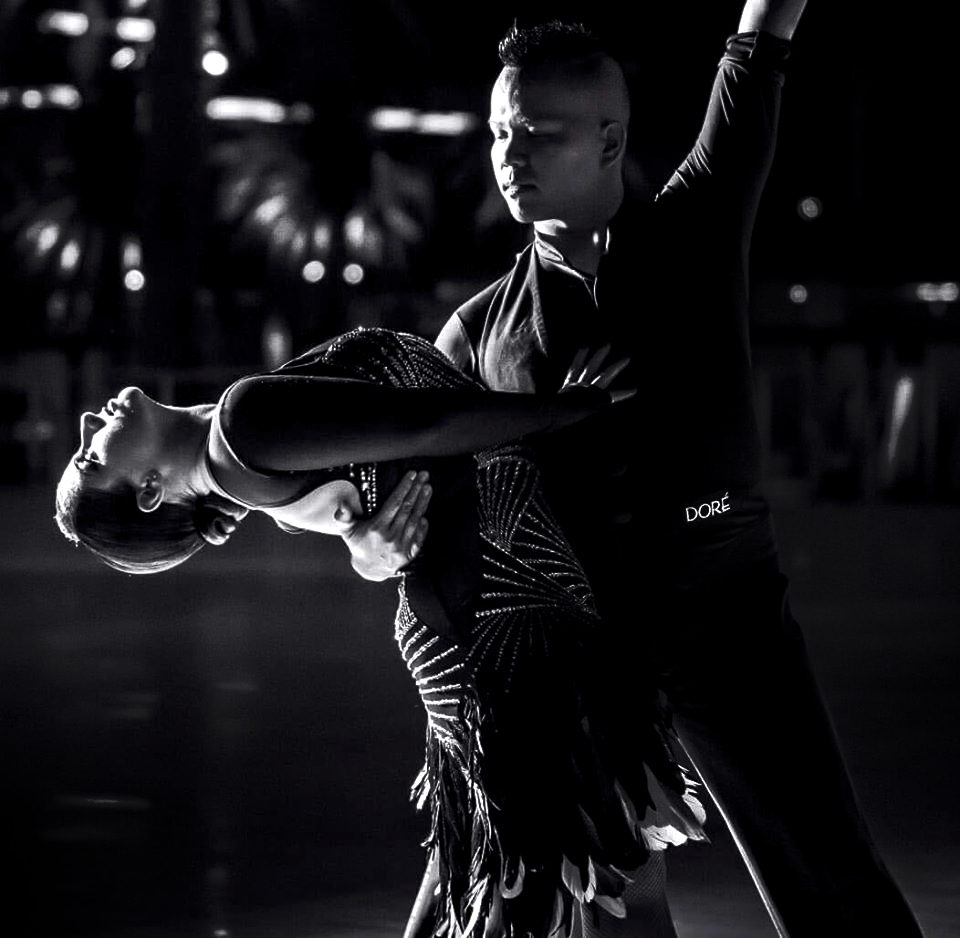

Daniel Lee Tran
Instructor and Technical Director
Daniel Lee Tran (or just "Dan") is a Professional ballroom dancer
and is in charge of the technical side behind the Cosplay Ball.
Despite many accolades under his belt, including a United
States/World Cup title and various teaching awards, Dan's biggest
passion is getting people to dance for the sake of experiencing
their own personal growth. Cosplay Ball has provided him the
unique opportunity to combine his expertise in partner dancing
with his love for Anime and Gaming and provide the best dance
education to a young and inspired audience.